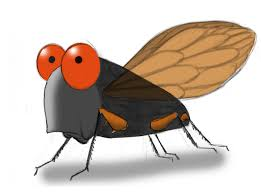

About animals
Chaemelon
Chameleons are reptiles that are part of the iguana suborder. These colorful lizards are known as one of the few animals that can change skin color. However, it is a misconception that chameleons change colors to match their surroundings.
Bear
Bears are carnivoran mammals of the family Ursidae. They are classified as caniforms, or doglike carnivorans. Although only eight species of bears are extant, they are widespread, appearing in a wide variety of habitats throughout the Northern Hemisphere and partially in the Southern Hemisphere.
Pegion

The domestic pigeon (Columba livia domestica) is a pigeon subspecies that was derived from the rock dove (also called the rock pigeon). The rock pigeon is the world's oldest domesticated bird. Mesopotamian cuneiform tablets mention the domestication of pigeons more than 5,000 years ago, as do Egyptian hieroglyphics. Research suggests that domestication of pigeons occurred as early as 10,000 years ago.
Camel
A camel is an even-toed ungulate in the genus Camelus that bears distinctive fatty deposits known as "humps" on its back. Camels have long been domesticated and, as livestock, they provide food and textiles
Cicada

Cicadas have prominent eyes set wide apart, short antennae, and membranous front wings. They have an exceptionally loud song, produced in most species by the rapid buckling and unbuckling of drumlike tymbals. The earliest known fossil Cicadomorpha appeared in the Upper Permian period; extant species occur all around the world in temperate to tropical climates. They typically live in trees, feeding on watery sap from xylem tissue and laying their eggs in a slit in the bark. Most cicadas are cryptic. The vast majority of species are active during the day as adults, with some calling at dawn or dusk. Only a rare few species are known to be nocturnal.